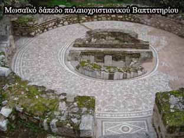

Βυζαντινή ¶μφισσα
 Ο αυτοκράτορας Ιουστινιανός (6ος αι.) φρόντισε ιδιαίτερα για την οχύρωση της ¶μφισσας, ενισχύοντας τα τείχη της, για να την προστατεύσει από τις βαρβαρικές επιδρομές κυρίως των Ούννων. Στα τέλη του 10ου αιώνα η πόλη ερημώθηκε από τις ορδές των Βουλγάρων του Σαμουήλ, σύμφωνα με το «Χρονικό του Γαλαξειδίου», ιστορικό τεκμήριο της εποχής, γραμμένο από τον ιερομόναχο Ευθύμιο. Πειρατές και Νορμανδοί τη λεηλάτησαν τον 11ο αιώνα. | ||